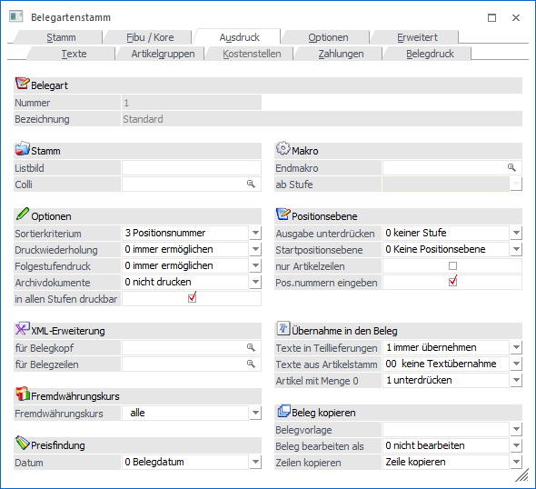
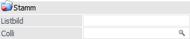
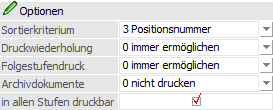
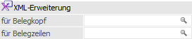
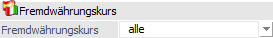
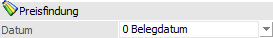
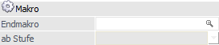
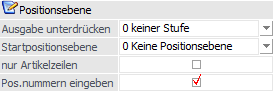
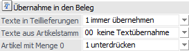
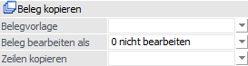

In dem Register "Ausdruck" können unter anderem Einstellungen zum Ausdruck und zur Behandlung von Druckwiederholungen bzw. Folgestufendruck vorgenommen werden.

Im oberen Teil des Fensters wird die Belegart angezeigt, welche gerade bearbeitet wird (Felder "Nummer" und "Bezeichnung").
Stamm

Ø Listbild
Soll das Standard-Formular verwendet werden so darf dieses Feld nicht befüllt werden. Sollten jedoch davon abweichende Formulare verwenden, kann an dieser Stelle die von der Standardbezeichnung abweichenden Zeichen eingeben werden (max. 2 Stellen).
Beispiel
Das Formular für die Standard Faktura lautet P02W44. Haben Sie ein Formular für Ihre Exporte nach USA kreiert, welches P02W44US heißt, so tragen Sie hier US ein. Selbstverständlich müssen die übrigen Belegstufen nach demselben Schema benannt werden, also P02W43US für den Lieferschein, P02W42US für den Auftrag und P02W41US für das Angebot.
Ø Colli
Übersteuerung der Colli-Einheit im Artikel mit Hilfe der Maskierungstechnik, wie bei "Sollkonto" bzw. "Habenkonto" (siehe auch Kapitel "Fibu / Kore"), durch Rautenzeichen ###. Damit kann z.B. gesteuert werden, ob ein Kunde ARA-pflichtig ist oder nicht.
Optionen

Ø Sortierkriterium
Bei der Erfassung eines Beleges kann entschieden werden, ob die Artikelzeilen sortiert werden sollen oder nicht. Nach welchem Kriterium sortiert wird, wird hier in der Belegart eingestellt:
ü 0 - keine Sortierung
ü 1 - Artikelnummer
ü 2 - Lagerplatz (Register "Texte" im Artikelstamm)
ü 3 - Positionsnummer (bei aktivierter Option "Pos.nummern eingeben")
ü 4 - Lieferdatum
Hinweis
Wird ein Beleg nach den Kriterien "1 - Artikelnummer", "2 - Lagerplatz" oder "4 - Lieferdatum" sortiert, so gehen alle Textzeilen und Zwischensummen verloren, da im Beleg keine Verbindung zwischen den Textzeilen und der Artikelzeile besteht - daher kann die WinLine nicht wissen, welche Texte zu welchem Artikel gehören.
Ø Druckwiederholung
An dieser Stelle kann zwischen folgenden Einstellungsmöglichkeiten gewählt werden:
ü 0 - immer ermöglichen
Beim
Speichern des Beleges kann eine Anzahl der Druckwiederholungen eingetragen
werden.
ü 1 - nie ermöglichen
Beim
Speichern des Beleges ist es nicht möglich eine Anzahl der Druckwiederholung
einzutragen.
Ø Folgestufendruck
Folgende Einstellungen sind möglich:
ü 0 - immer ermöglichen
Beim
Druck des Beleges (im Register "Belegerfassen - Speichern" bzw. "Telesales -
Speichern") ist es möglich, auch die Folgestufe drucken zu lassen, wenn der
Beleg in der Folgestufe als Belegstatus ein A für "automatisch" eingetragen
hat.
ü 1 - immer drucken
Beim Druck
des Beleges (im Register "Belegerfassen - Speichern" bzw. "Telesales -
Speichern") wird automatisch vorgeschlagen, auch die Folgestufen drucken zu
lassen, wenn der Beleg in der Folgestufe als Belegstatus ein A für "automatisch"
eingetragen hat.
ü 2 - nie drucken
Es ist nicht
möglich die Folgestufe eines Beleges (im Register "Belegerfassen - Speichern"
bzw. "Telesales - Speichern") drucken zu lassen.
Beispiel
Die Belegstufen "Angebot" und "Auftragsbestätigung" müssen manuell abgerufen werden. Nach Druck der Auftragsbestätigung soll der Lieferscheines automatisch gedruckt werden können (auch mit direkter Faktura) und bei Druck des Lieferscheins sofort die entsprechende Rechnung. Der Status müsste für solch einen Fall MMAA (manuell - manuell - automatisch - automatisch) lauten.
Ø Archivdokumente
Die Behandlung von Archivdokumenten, welche zu einem Beleg (per Drag & Drop in die Belegerfassung) archiviert werden, wird an dieser Stelle gesteuert.
ü 0 - nicht drucken
Mit dieser
Einstellung werden beim Belegdruck keine zusätzlichen Archivdokumente
gedruckt.
ü 1 - drucken
Mit dieser
Einstellung können Archivdokumente, die dem Beleg (durch Drag & Drop in das
Register "Kopf" der Belegerfassung) zugewiesen wurden, mit ausgedruckt werden.
Dazu muss der Beleg auf den Drucker ausgegeben werden und nicht in den
Spooler.
Hinweis
Unterstützt werden hierbei keine SPL-Dateien!
ü 2 - mailen
Mit dieser
Einstellung werden die angehängten / zugewiesenen Archivdokumente per Mail
verschickt - gemeinsam mit dem Beleg. Voraussetzung dafür ist, dass im Beleg ein
"AUXMAIL"-Steuerelement vorhanden ist, mit welchem auch der Beleg selbst per
Mail versendet wird.
Hinweis
Ist kein "AUXMAIL"-Steuerelement vorhanden, werden die angehängten / zugewiesenen Archivdokumente nicht gedruckt und auch nicht gemailt.
ü 3 - mailen incl.
XX-Formular
Wenn diese Option aktiviert ist und ein XX-Formular zu der
jeweiligen Stufe existiert, dann wird das XX-Formular nicht ausgedruckt, sondern
gespeichert und im Mail als Anhang mit versendet.
Dabei wird die Datei in
jenem Format erstellt, welches in den Mail-Einstellung im WinLine START
(Parameter - Einstellungen - Register "Mail" - Option "Ausdrucke versenden als")
angegeben ist.
Hinweis 1
Wenn diese Option in der Belegart eingestellt ist und im Belegformular kein Steuerelement "AUX MAIL" hinterlegt ist, dann wird das XX-Formular nicht gedruckt.
Hinweis 2
Diese Option funktioniert auch in Zusammenhang mit dem Kopiendruck.
Beispiel 1
Das Element "AUX MAIL" ist im Formular mit Flag "O" hinterlegt und es sollen 2 Kopien gedruckt werden. - der Originalausdruck wird mit dem XX-Formular im Originaldruck als Anhang versendet.
Beispiel 2
Das Steuerelement "AUX MAIL" ist im Formular ohne Flag hinterlegt und es sollen 2 Kopien gedruckt werden.
ü Der Originalausdruck wird mit dem XX-Formular im Originaldruck als Anhang versendet.
ü Die erste Kopie wird mit dem XX-Formular (Kopie1-Flag gesetzt) als Anhang versendet.
ü Die zweite Kopie wird mit dem XX-Formular (Kopie2-Flag gesetzt) als Anhang versendet.
Achtung
Das Drucken / Mailen der Archivdokumente erfolgt nur, wenn es sich beim Ausdruck um den Originalausdruck handelt!
Ø in allen Stufen druckbar
Durch Aktivierung dieser Option stehen die zu einem Beleg archivierten Dokumente auch in den folgenden Belegstufen zur Verfügung und können dort angezeigt bzw. gedruckt werden.
Hinweis
Das Archivdokument ist hierbei weiterhin nur 1x im System vorhanden und wird durch Erzeugung einer neuen Belegstufe nicht kopiert, sondern mit dem entstehenden Beleg verknüpft.
XML-Erweiterung

Ø XML-Erweiterung für Belegkopf
An dieser Stelle kann eine Standardvorlage (XML-Datei) für das Erfassen von Werten für den Belegkopf hinterlegt werden. Durch Drücken der F9-Taste kann nach allen bereits in der WinLine hinterlegten XML-Erweiterungen gesucht bzw. neue XML-Erweiterungen angelegt werden.
Ø XML-Erweiterung für Belegzeilen
Hier kann eine Standardvorlage (XML-Datei) für das Erfassen von Werten für den Belegmittelteil hinterlegt werden. Durch Drücken der F9-Taste kann nach allen bereits in der WinLine hinterlegten XML-Erweiterungen gesucht bzw. neue XML-Erweiterungen angelegt werden.
Fremdwährungskurse

Ø Fremdwährungskurs
Pro Währung können 6 verschiedene Kurse abgespeichert werden. Welcher dieser 6 Kurse bei der Erfassung mit dieser Belegart verwendet werden soll, kann an dieser Stelle eingestellt werden.
ü alle
Wenn die Option auf "alle"
eingestellt ist, wird wie bisher der 1. Kurs verwendet, es kann aber in der
Fremdwährungshistorie ein anderer Kurs ausgewählt werden (nähere Informationen
entnehmen Sie bitte dem Kapitel "Fremdwährungshistorie" bzw.
"Fremdwährungscode").
ü 1 bis 6
Wenn die Option auf
einen bestimmten Kurs eingestellt ist, wird nur dieser Kurs in der
Belegerfassung verwendet bzw. in der Fremdwährungshistorie angezeigt.
Hinweis
Diese Einstellung wird nicht nur beim Erfassen von Belegen, sondern auch beim automatischen Erzeugen von Lieferantenbestellungen und bei der Belegumstellung (Änderung der Fremdwährung) berücksichtigt.
Preisfindung

Ø Preisfindung
Für die Preisfindung kann gesteuert werden, welches Datum für die Preisfindung als Basis verwendet werden soll.
ü 0 - Belegdatum
Das Datum aus
der Belegerfassung wird für die Preisfindung herangezogen.
ü 1 – Lieferdatum
Das Lieferdatum
aus der Belegmitte wird für die Preisfindung verwendet. Dabei wird nach dem
Editieren des Lieferdatums eine erneute Preisfindung vorgenommen.
ü 2 - Tagesdatum
Das Anmeldedatum
in der WinLine wird verwendet.
ü 3 - Systemdatum'
Das
Betriebssystemdatum wird für die Preisfindung genommen.
Makro

Ø Endmakro
Eingabe eines Belegmakros (z.B. Aufsummierung der Packstoffsummen in einem speziellen Artikel, welcher am Belegende automatisch herangezogen werden soll). Im Feld "ab Stufe" können Sie festlegen, ab welcher Belegstufe das Belegendmakro durchgeführt werden soll.
Hinweis
Das Endmakro wird nur 1x in der definierten Belegstufe ausgeführt.
Positionsebene

Ø Ausgabe unterdrücken ab ... Stufe
Sind Belegzeilen durch Vergabe von Positionsnummern strukturiert worden, kann der Andruck von bestimmten Unterebenen durch dieses Kennzeichen unterdrückt werden (z.B. drucke nur Belegzeilen bis zur Stufe 2 = z.B. 1.1, 1.2, 1.3, etc.)
Ø Startpositionsebene
Hier kann eine Positionsebene hinterlegt werden, mit der bei der Belegerfassung gestartet werden soll. D.h. der erste erfasste Artikel wird mit dieser Positionsebene versehen. Wenn allerdings im Artikel eine Standardpositionsebene vorhanden ist, wird diese unabhängig von der Einstellung in der Belegart genommen.
Ø nur Artikelzeilen
Wenn diese Option aktiv ist, dann wird die Positionsebene nur auf Artikelzeilen übernommen, d.h. bei Textzeilen wird keine Positionsebene hinterlegt. Bei einer neuen Artikelzeile wird dann die Positionsebene aus der letzten Artikelzeile übernommen.
Ø Pos.nummern eingeben
Bei Aktivierung dieser Option kann die Positionsnummer in der Belegerfassung frei vergeben werden.
Hinweis
Wenn die Positionsnummer selber vergeben werden soll, dann ist es sinnvoll die Option "Startpositionsebene" auf "0 - Keine Positionsebene" zu stellen. Ist trotz einer manuellen Positionsnummernvergabe ein Vorschlag gewünscht, dann kann dieses über den Artikelstamm gesteuert werden (Register "Stamm", Option "Standardpositionsebene").
Übernahme in den Beleg

Ø Texte in Teillieferungen
Hier können Sie steuern, ob und welche Textzeilen im Fall von Teillieferungen in den Teillieferschein und die Teilfaktura übernommen werden sollen.
ü 0 - nie übernehmen
Es sollen
keine Textzeilen übernommen werden.
ü 1 - immer übernehmen
Alle
Textzeilen, unabhängig von den gelieferten Artikeln, sollen übernommen
werden.
ü 2 - abhängig vom Artikel
übernehmen
Es werden die Texte nur solange übernommen, solange die gelieferte
Menge des Artikels nicht Null ist.
Hinweis
Die Einstellung dieser Option wird für die gesamte Textsteuerung verwendet. Das heißt, diese Option behandelt die Texte am Beleg, unabhängig von der Belegstufe.
Ø Texte aus Artikelstamm
Pro Belegart kann entschieden werden, ob ein bzw. welcher Text aus dem Artikelstamm automatisch in das Notizfeld der Belegerfassen (Register "Detailinfo") eines Artikels übernommen wird.
Zur Auswahl stehen die Notizfelder 1 - 10, sowie die Felder "Langtext 1" und "Langtext 2". Im Belegerfassen wird danach je nach verwendeter Belegart bzw. Einstellung das Notizfeld in der Detailinfo eines Artikels befüllt.
Ø Artikelzeilen mit Menge 0
Es geht hier um Möglichkeiten in Bezug auf Belegzeilen, bei denen die Menge auf Null gesetzt wurde (z.B. bei Teillieferungen).
ü 0 - nicht unterdrücken
Bei
Auswahl dieser Option werden Belegzeilen, bei denen die Menge auf Null gesetzt
wurde (z.B. bei Teillieferungen), beim Ausdruck mit aufgeführt. Zu beachten ist
dabei, dass bei einem erneuten Aufruf des Belegs (Bsp. Lieferschein editieren)
diese Belegzeilen (mit Menge 0) nicht mehr enthalten sind.
ü 1 - unterdrücken
Bei
Aktivierung dieser Option werden Belegzeilen, bei denen die Menge auf Null
gesetzt wurde (z.B. bei Teillieferungen), automatisch beim Ausdruck
unterdrückt.
ü 2 - immer übernehmen
Mit dieser
Option wird bei Erstellung eines Teillieferscheins eine 1:1 Kopie des Auftrags
erstellt. Das heißt, sowohl beim Editieren des Teillieferscheins - als
auch beim Lieferscheindruck (auch Wiederholungsdruck) - bleiben diese
Belegzeilen (mit Menge 0) vorhanden. In den Spalten "Menge bestellt" und "Menge
bereits geliefert" werden die Werte aus dem Auftrag angezeigt.
Beleg kopieren

Ø Belegvorlage
Ein hier hinterlegt Belegvorlage (Typ "Belege kopieren") wird im "Belegerfassen - Speichern"-Fenster zur Verwendung vorgeschlagen (weiter Informationen entnehmen Sie bitte dem Kapitel Belegvorlagen).
Ø Belege bearbeiten als
Aus der Auswahlliste kann eine Vorbelegung getroffen werden, was mit einem kopierten Beleg (über "Belegerfassen - Speichern") erfolgen soll. Diese Vorbelegung kann im Programmbereich "Belegerfassen - Speichern" übersteuert werden. Zur Auswahl stehen folgende Möglichkeiten:
ü 0 - nicht bearbeiten
Der Beleg
wird kopiert, jedoch keine weitere Aktion durchgeführt.
ü 1 - Angebot, 2- Auftrag, 3-
Lieferschein, 4- Faktura
Der Beleg wird nach dem Kopieren in der angegebenen
Belegstufe zur weiteren Bearbeitung geöffnet.
Ø Zeilen kopieren
An dieser Stelle kann eine Belegvorlage des Typs "Belegzeilen kopieren" hinterlegt werden. Die Einstellungen dieser Vorlage werden automatisch genutzt, wenn eine Belegzeile per Tabellenbutton "Belegzeilen einfügen" oder via Drag & Drop in den Beleg eingefügt wird.